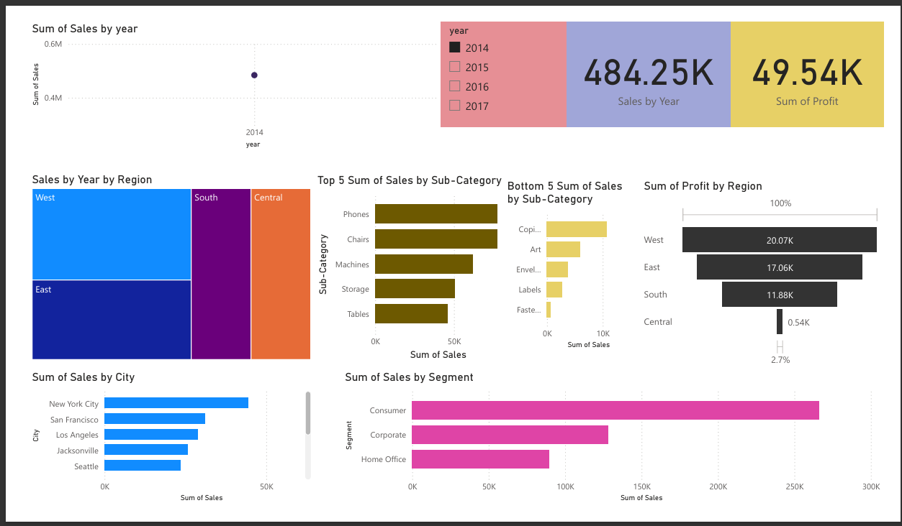

📖 Storytelling Behind the Dashboard
This Power BI dashboard was developed to uncover sales trends, profitability drivers,
and regional performance over a four-year period. By integrating data from orders,
customer segments, and regional managers, we aimed to support business leaders in:
- Identifying high-performing product categories and regions
- Understanding where profits are concentrated or declining
- Pinpointing underperforming sub-categories for review
- Empowering regional managers with actionable insights
For example, the dashboard shows that Phones and Chairs consistently lead in sales,
while categories like Labels and Art struggle. This helps stakeholders realign marketing,
inventory, and strategic planning efforts.
📂 Tables Used in the Dashboard
- Orders: Product ID, Sales, Profit, Quantity, Region, etc.
- People: Regional Assignment for Managers
- Returns: Returned order tracking (if integrated)
📈 What the Dashboard Displays
- Sales Trend by Year (2014 - 2017)
- Sales by Segment: Consumer, Corporate, Home Office
- Top 5 & Bottom 5 Sub-Categories by Sales
- Sales Distribution by Region & City
- Profit Analysis by Region
📌 Measures Used
- Sum of Sales
- Sum of Profit
- Sum of Quantity
- Average Discount
📅 Slicer Selected: Year 2014 – Deep Dive
When the slicer is set to 2014, the dashboard filters all visualizations to show only sales and profit data for that year.
Here’s what we observe in the visuals and what it means for decision-makers:
- Sales by Region: The West region leads in total sales, followed by East and South Central. This indicates stronger market presence in western territories.
- Top Cities: New York City, San Francisco, and Los Angeles dominate in urban sales. These cities should be prioritized for marketing and supply chain focus.
- Top Sub-Categories: Products like Phones, Chairs, and Machines show the highest sales. These sub-categories are key revenue drivers and candidates for upselling strategies.
- Bottom Sub-Categories: Items like Copiers, Labels, and Envelopes show minimal sales. These may need reevaluation or bundling offers to increase performance.
- Segment Analysis: The Consumer segment dominates, suggesting that B2C strategies are working well. However, Corporate and Home Office segments may have growth potential.
- Profit by Region: Profit margins are highest in the West region, followed by East, with very low profit in Central. This raises red flags for cost control and margin improvement in Central.
📌 Conclusion: The year 2014 revealed strong sales in western urban areas driven by tech and office supplies. The business can capitalize on this by investing more in regional campaigns, managing inventory for best-selling products, and reviewing underperforming categories.